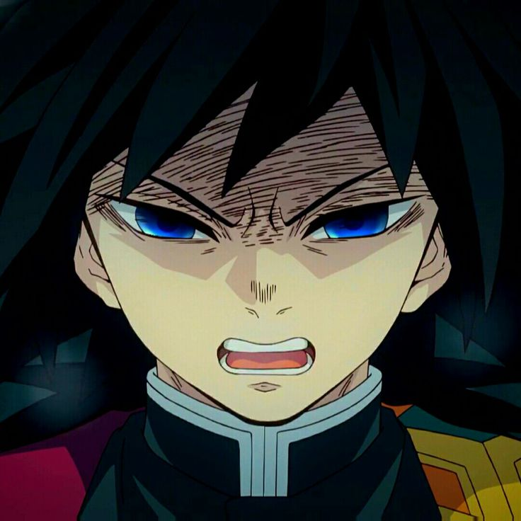

Giyu Tomioka Fan Page!!
im trying to learn html+css+ javascript(later)
 Visit Demon slayer fandom website for more info...
Visit Demon slayer fandom website for more info...
are you a fan of giyu?
Top 3 things Giyu loves:
- Top food
- Hobby
- A favored companion

Top 3 things Giyu hates:
- Animals
- Himself
- People who are ready to die
Did you like this page?